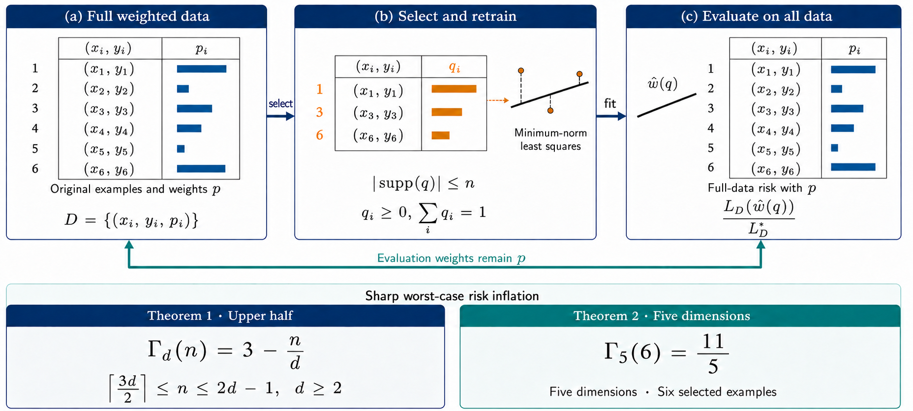

The upper-half intermediate-budget law for weighted data selection, with its sharpness construction, is formalized in Lean 4 with Mathlib, with a theorem dependency map.
Abstract
How much risk does a small reweighted training support retain? For finite weighted least squares with the minimum-norm learner, we prove the exact law $Γ_d(n)=3-n/d$ throughout $\lceil3d/2\rceil\leq n\leq2d-1$. The guarantee covers every observed feature rank and uses selections that preserve the full feature span. Balanced simplex anchors reduce dimension; positive-weight lifting and independent-line compression close the risk bound. Shifted coordinate pairs attain the matching lower bound. The complete dataset-level upper bound and sharpness construction are verified in Lean 4. At the smaller budget $(d,n)=(5,6)$, we also prove $Γ_5(6)=11/5$, matching the simplex-block prediction from $5=3+2$ over arbitrary interacting configurations. Circuit covers, comparison second moments, and circuit-plane probabilities give the sharp excess $6/5$, while polar-face geometry resolves shared rank-three circuits. The general simplex-block frontier connects these laws within the intermediate-budget selection problem.
Problem
The question is how much worst-case risk inflation Γ_d(n) a reweighted training support of at most n examples incurs for minimum-norm weighted least squares, relative to the full-data optimum. Earlier work settled the endpoints n=d and n=2d and left intermediate budgets open.
Approach
The upper-half law is proved by dimension induction. Balanced simplex anchors reduce dimension, positive-weight lifting preserves the full feature span, and compressing the least costly independent lines bounds the excess. Shifted coordinate pairs give the matching lower bound. For (d,n)=(5,6), a case analysis on circuit rank uses comparison second moments, circuit-plane probabilities and polar-face geometry. The dataset-level upper-half theorem is verified in Lean 4.19.0 with Mathlib.

Figure 1: Weighted selection with a fixed learner. A support of at most n original examples is reweighted for minimum-norm least-squares training; evaluation uses the complete dataset and its original weights p . The two sharp laws cover the upper-half budget interval and the five-dimensional six-example problem, respectively. Tables and fitted lines are schematic; selected rows retain their origi
Results
Γ_d(n)=3−n/d holds exactly for ⌈3d/2⌉≤n≤2d−1, and Γ_5(6)=11/5, matching a seven-point 3+2 simplex-block example. The Lean project checks the full upper-half statement, covering zero residuals, deficient ranks and the minimum-norm rule.